01
動きとは
この回でやることは3つです。
- 画面に付ける「動き」の一覧を Claude Code に作らせる
- いちばんよく使う動きを1つ足させて、自分の手で確かめる
- 残りの動きを1行ずつ足していく
動きを付けるのは、見た目だけの画面（モック）の上です。この回で作るのは、ブラウザの中だけで動く部分で、データを残す処理・画面をまたいだデータの受け渡し・サーバー・本物の AI は作りません。
動き＝ボタンを押す・文字を入れるといった操作を受け取って、画面の中身を書き換える仕組みです。ブラウザの中で動く JavaScript というプログラムで作ります。モックは、ボタンを押しても何も起きない画面でした。この回で、押したら一覧に1行増える、入力が足りなければ理由が出る、といった動きを足します。
 用語
用語
- 動き
- 操作（押す・入れる）を受け取って、画面の中身を書き換える仕組み。この回で足すものです。
- JavaScript
- ブラウザの中で動くプログラム。HTML（何を置くか）と CSS（どう見せるか）に対して、「押されたら何をするか」を書きます。ファイル名の最後が
.jsになります。 - 画面側
- ブラウザの中で動く部分。HTML・CSS・JavaScript でできています。フロントエンドとも呼びます。
- 裏側
- 利用者から見えない場所で動く部分。データを残す処理や、AI のサービスを呼ぶ処理などです。この回では作りません。
- サーバー
- 利用者から見えない場所で動き、画面からの求めに応じてデータを返したり残したりするプログラム。この回では作りません。
- モック
- 見た目だけを作った画面。ボタンを押しても何も起きません。
この回の流れ（上から順に進めます）
準備
手動にして、app の控えを取る
03指示①
動きの一覧を作らせて、読んで直す
04指示②
いちばんよく使う動きを1つ
05確かめる
自分の手で試して残す
06動かないとき
コンソールを渡す
07指示③
残りを1行ずつ
08見直す
全部押す・見た目・仕様書
なぜ見た目の次に動きを足すのか
アプリは「見た目 → 動き → 裏側」の順に、1段ずつ足して作ります。見た目はモックでできているので、この回はその次の段です。
- 押した結果を、できている画面の上で目で確かめられます。見た目が決まっているので、押したあとに「一覧に1行増えたか」「合計が変わったか」をその場で見て判断できます
- うまくいかないとき、調べる場所が画面側だけで済みます。まだ裏側が無いので、押しても動かないなら、原因は足したばかりの JavaScript にあります。裏側まで一度に作ると、画面の書き換えが悪いのか、データを残す処理が悪いのか、AI の呼び出しが悪いのかが分かりません
- 裏側で何を受け取って何を返せばよいかが、具体的に決まります。画面で「保存」を押したときにどの項目が集まるか、AI に何を渡して何を受け取って表示するかが、動きを作る中で形になります。裏側は、それに合わせて作れば済みます
- 「処理中」「失敗」の見え方を、本物の AI につなぐ前に決められます。本物の AI につないでから決めると、表示を確かめるために押すたびに料金がかかります。仮の文章を返す状態なら、何度押しても料金はかかりません
- 1回の指示が小さくなり、確認画面を読み切れます。動き1つなら、増えるのは JavaScript のファイル1つ（AI を使うアプリは2つ）と、HTML の数行だけです。確認画面で、自分の画面の入力欄やボタンの名前が出てくるかを目で追えます
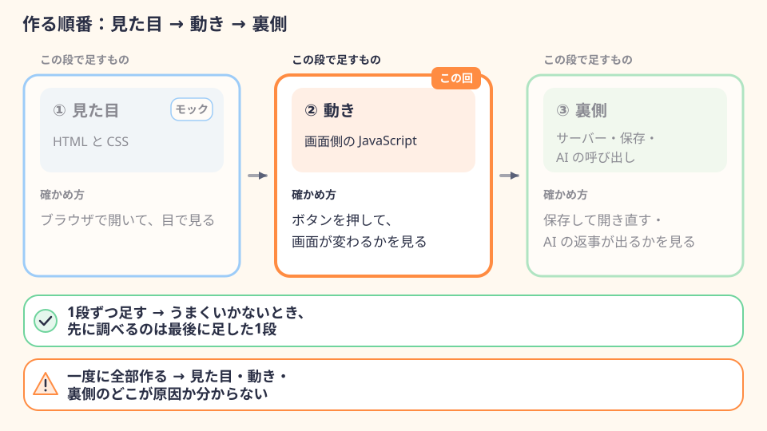
この回で足すもの・足さないもの
足す（ブラウザの中で動くもの）
- 押したときの画面の変化（一覧に1行増える・合計が変わる・結果の欄に文章が出る・やり取りが増える・消す前の確認）
- 入力のチェック（空・数字でない・範囲の外）
- 「1件も無いとき」の案内
- 「処理中」「失敗したとき」の表示（AI を使うアプリ）
- AI に考えてもらう部分は、仮の文章を返す1か所（
app/ai.js）にまとめる
足さない（裏側。データの置き場を決めてから作る）
- データを残す（再読み込みしても、ブラウザを閉じても残る）
- 画面をまたいだデータの受け渡し（修正画面に、選んだ記録の中身を出す など）
- サーバー
- 本物の AI の呼び出し（API キーや料金の準備が要る）
なぜデータを残す処理をまだ作らないのか
- 残し方は、置き場で変わります。ブラウザの中・自分の PC のファイル・インターネット上のデータベースなど、置き場によって作り方も、消える条件も違います。置き場を決める前に作ると、決めたあとに作り直すことになります
- ダブルクリックで開いた画面では、ブラウザの中にデータを残す動きがブラウザによって違います。画面のファイルを直接開いた状態（アドレスが
file://で始まる状態）でブラウザの中にデータを残す仕組みは、決まりが定められておらず、2026年10月4日に確かめたときも、Chrome と、Safari と同じ表示の仕組みのブラウザでは画面どうしで同じデータが見え、Firefox では画面ごとに別々になりました。ブラウザの更新で変わることもあります。データを残すのは、アプリをサーバーから開く形にしてからにします - 画面をまたいでデータを渡すのも、データを残す仕組みが前提になります。画面1から画面2へ移ると、ブラウザは画面2の HTML を読み込み直し、画面1の中に持っていたデータは消えます。修正画面に選んだ記録の中身を出すには、データをどこかに残しておく必要があります
だから、この回の動きは「再読み込みすると最初の状態に戻る」のが正しい状態です。消えるのは不具合ではありません。
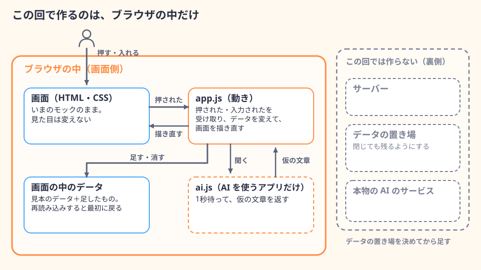
 用語
用語
- 再読み込み
- ブラウザに、いま開いている画面のファイルを読み直させること。Mac は ⌘R、Windows は F5 です。動きの中で持っていたデータは、再読み込みすると最初の状態に戻ります。
- file://
- ブラウザのアドレスが
file://で始まるのは、自分の PC の中のファイルを直接開いている状態です。ダブルクリックで HTML を開くとこの形になります。ブラウザによっては「ファイル」と表示されます。 - API キー
- AI のサービスを呼び出すときに、誰が使っているかを示す秘密の文字列。使った分の料金は、このキーを発行した人に請求されます。
自分のアプリの型で、読み替えるところ
このページの例は、記録型の「食費メモ」（画面2枚・一覧あり）です。変換型・相談型のアプリは、次のように読み替えてください。
| 読み替えるところ | 記録型（入れて、ためて、見返す）。このページの例「食費メモ」 | 変換型（入れたものを別の形にして返す） | 相談型（質問して、答えをもらう） |
|---|---|---|---|
| いちばんよく使う動き | 金額・日付・メモを入れて「保存」→ 一覧のいちばん上に1行増え、合計が変わる | 文章を入れて「変換」→ 少し待って、結果の欄に仮の文章が出る | 入力して「送信」→ 自分の発言が増え、少し待って AI の仮の返事が増える |
| この回で作れるもの | 入力のチェック／削除（確認してから消す）／1件も無いときの案内 | 入力のチェック／処理中／失敗したとき／結果のコピー | 入力のチェック／処理中／失敗したとき／やり取りを空にする（確認してから） |
| 「あとで」に回すもの | 修正画面に選んだ記録を出す／修正の保存／閉じても残る | 履歴を残す・見返す／本物の AI で変換する | 閉じても残る／本物の AI の返事 |
app/ai.js | 作らない（食費メモには AI を使う動きが無いため。AI の機能がある記録型は、その行を作るときに作る） | 作る（仮の文章を返す） | 作る（仮の返事を返す） |
表は横にスクロールできます
02
準備：権限モードを「手動」にして、app の控えを取る
仕様書 docs/spec.md とモック app/ が入っているアプリのフォルダ（このページでは my-app。名前はご自身で付けたもの）を、Claude デスクトップアプリで開きます。
フォルダを開いて、権限モードを「手動」にする
- 1
Claude デスクトップアプリで
</>（Claude Code）→「＋ 新規」を押すなぜ：前の会話と混ざりません。モックを作ったときの会話には「JavaScript は使わない」という条件が残っていて、新しい指示とぶつかります。
- 2
画面の下のフォルダ名のボタン →「フォルダを開く…」→
my-appを選んで「開く」入力欄の近くに「ローカル」と
my-appが出ていることを見ます。なぜ：選んだフォルダだけが作業の対象になります。「ローカル」は、この PC の中で動かす設定です。 - 3
入力欄の下のモード名を押して「手動」を選ぶ
なぜ：この回は JavaScript のファイルを新しく作り、HTML も書き換えます。「手動」なら、どのファイルに何を書くかを確認画面で見てから許可できます。新しいセッションは「オート」や「編集を受け入れる」で始まることがあるので、開くたびに見ます。
確認画面では、毎回「一度だけ許可」を押します。「常に許可」は選びません。なぜ：一度選ぶと、以後その種類の操作は確認なしで進み、頼んでいない style.css の書き換えやファイルの追加に気づけなくなります。確認画面が何回も出ますが、それで正しい状態です。
 用語
用語
- 権限モード
- ファイルの書き換えやコマンドの実行の前に、確認を求めるかどうかの設定。この回は「手動」にします。
- コマンド
- PC に文字で出す命令。
- セッション
- Claude Code との1つの会話のまとまり。「＋ 新規」で新しく始めます。
app の控えを取る
Finder（Windows はエクスプローラー）で my-app の中の app フォルダを複製し、名前を app-mock に変えます。
- Mac：
appを右クリック →「複製」→ できた「app のコピー」を右クリック →「名前を変更」→app-mock - Windows：
appを選んで Ctrl+C → Ctrl+V → できた「app - コピー」を右クリック →「名前の変更」→app-mock
なぜ控えを取るのか：動きを足すと、HTML に読み込みの1行や要素の名前が足され、一覧の仮のデータは JavaScript のほうへ移ります。思ったとおりに動かなくなったときや、見た目がいつの間にか変わったとき、app-mock の画面と見比べれば、どこが変わったかが分かります。
どうしても直らないときは、控えからやり直します。いまの app の名前を app-broken に変え、app-mock を複製して、できたコピーの名前を app にします。そのあと「docs/actions.md の状態が『作った』の行をすべて『まだ』に戻し、『確かめた結果』を空にしてください。ほかは変えないでください」と頼み、指示②からやり直します。なぜ：一覧を戻さないと、指示③は「作った」の行を飛ばします。app の中身はモックに戻っているので、その行の動きは作られないままになります。
なぜ Claude Code ではなく自分で複製するのか：控えは「AI が手を入れる前の状態」を残すためのものです。複製も頼むと、その作業の確認画面が増え、どれが控えかを自分で見ていないことになります。
docs/tasks.md（作る順番）は、この回の指示①〜③では Claude Code に読ませません（最後の見直しで印を付けるときだけ読ませます）。docs/tasks.md には、データを残す処理やサーバーまで含めた順番が書いてあります。読ませると、この回では作らないと決めたものまで作り始めます。この回の作る順番は、次の指示①で作る docs/actions.md にまとめます。
03
指示①：動きの一覧を作らせる
いきなり動きを作らせず、どの画面で、何をすると、何が起きるかの一覧を先に作らせます。次の型をそのまま入力欄に貼って送ります。書き換える箇所はありません。
docs/spec.md と、app/ の中の画面（HTML）を読んで、画面に付ける「動き」の一覧を docs/actions.md に書いてください。まだ動きは作らないでください。 ■ 一覧の書き方 - 表にする。列は「番号｜画面｜何をすると｜何が起きるか｜確かめ方｜状態｜確かめた結果」 - 1行に1つの動き。仕様書の「やること」を、画面での操作に分けて書く。「やらないこと」に入っているものは書かない - 状態の欄は、次のどちらかにする - 「まだ」：画面の中だけで作れる動き（押すと画面が変わる・入力をチェックする・仮の文章を出す など） - 「あとで」：データを残す・画面をまたいでデータを渡す・本物の AI を呼ぶ、のどれかが要る動き（この回では作らない） - 「確かめた結果」の欄は空のままにする - 入力のチェックは画面ごとに1行にまとめ、仕様書の「扱うデータ」の必須・種類・範囲から決める - 「1件も無いとき」の表示は1行入れる。「処理中」と「失敗したとき」の表示は、AI に考えてもらう動きがあるときだけ、それぞれ1行入れる。この2行は、仮の文章で試せるので「まだ」にする（失敗は、入力に「失敗テスト」という文字があるときだけ仮の文章がわざと失敗する形で試す） - AI に考えてもらう動きは、「何が起きるか」に「AI（いまは仮の文章）」と書く - 上から作る順番に並べる。1行目は、このアプリでいちばんよく使う操作 - 行は「あとで」も含めて12行まで。収まらないときは、動きを省かずに、一覧を書く前に、収まらない理由と、仕様書の「やること」から外せそうなものを教えて、そこで止まってください - 「確かめ方」は、ブラウザでその画面を開いて、画面の操作だけで自分の手で確かめる手順を1〜2文で書く。ファイルを書き換えて確かめる手順にはしない。画面の操作だけでは試せない行（例：1件も無いとき）は、試せるようにする行（例：削除）より後ろに並べる ■ 条件 - 書き込むのは docs/actions.md だけ。ほかのファイルは読むだけで、書き換えないでください - app-mock フォルダは読まないでください
 用語
用語
- docs/actions.md
- この回で作る「動きの一覧」のファイル。actions は「操作・動作」の意味です。
docsフォルダの中に、仕様書spec.mdと並べて置きます。 - 表
.mdのファイルの中では、|で区切った行が表を表します。テキストエディットやメモ帳で開くと、|で区切った文字のまま見えます。表の形で読みたいときは、Claude Code に「docs/actions.mdの表を、そのまま返答に出してください。ファイルは変えないでください」と頼むと、返答の中で列がそろって見えます。
条件の1行ずつに理由があります
- まだ動きは作らない
- なぜ作る前に、何をいくつ作るのかを自分の目で見ます。いきなり作らせると、仕様書に無い動きが混じっても、作られたあとでしか気づけません
- 1行に1つの動き
- なぜこの一覧の1行が、このあとの指示1回分になります。1行に2つ入っていると、1回の指示で2つ作ることになり、どちらが原因で動かないのかが分からなくなります
- 「やらないこと」は書かない
- なぜ一覧に載ったものは作られます。仕様書で外したものが紛れ込むと、AI が機能を足してきます
- 状態を「まだ」と「あとで」に分ける
- なぜこの回で作るのは、画面の中だけで動くものです。データを残す・画面をまたぐ・本物の AI が要るものを最初から分けておけば、この回の指示で手を付けさせずに済みます
- 入力のチェックは画面ごとに1行・仕様書の「扱うデータ」から
- なぜチェックを1項目ずつ別の行にすると、行の数が増えすぎて終わりません。仕様書に無いチェック（必要のない桁数の上限など）を AI が足すのも防ぎます
- 「処理中」「失敗したとき」は AI を使うときだけ・どちらも「まだ」
- なぜ画面の中だけで終わる処理は一瞬で終わり、失敗することもほとんどありません。表示を作っても、出る場面がありません。AI を使うときは、仮の文章でも「待つ」「失敗する」を起こせるので、本物の AI につなぐ前に作れます。書いておかないと、AI は「失敗は本物の AI を呼んだときの話」と考えて「あとで」に回すことがあります
- 上から作る順番・1行目はいちばんよく使う操作
- なぜいちばんよく使う操作が動けば、アプリの中心ができます。そのあとの行は、その上に足していけます
- 12行まで・収まらないときは止める
- なぜ行が多すぎると、全部を確かめきれません。食費メモ（できること6つ・画面2枚）で10〜12行に収まります。収まらないのは、仕様書の「やること」が多すぎることが多いためです。黙って行を削られると、作り忘れに気づけません。省かずに止めさせて、何を「やらないこと」に回すかをご自身で決めます
- 「確かめ方」を画面の操作だけで試せる文で・試せない行は後ろへ
- なぜ動いたかどうかの判断が、自分の手でできるようになります。「正しく動くこと」のような書き方だと、何を見ればよいか分かりません。書いておかないと、「app.js の見本のデータを消してから開く」のような、ファイルを書き換える確かめ方が出てくることがあります（実際に出ました）。「1件も無いとき」は、削除などで全部消せるようになってからなら、画面の操作だけで試せます
- 書き込むのは docs/actions.md だけ
- なぜ一覧を作るだけの指示で、画面のファイルに手が入るのを防ぎます
- app-mock は読まない
- なぜ同じ画面が2つあると、AI が控えのほうを見て一覧を作ることがあります
送ると、Claude Code は docs/spec.md と app/ の HTML を読み、docs/actions.md を作ります。確認画面で、ファイルの場所が my-app/docs/actions.md であることを見てから「一度だけ許可」を押します。
12行に収まらずに止まったときは、返答の「外せそうなもの」から作らないものを選び、「docs/spec.md の『やること』の（ ）を『やらないこと』に移してください。ほかの項目は変えないでください」と頼みます。許可したら、指示①をもう一度そのまま送ります。なぜ：指示①は、仕様書の「やること」から一覧を作り、「やらないこと」は書きません。仕様書のほうを直してから送り直せば、外したものは一覧に入らず、仕様書と一覧も食い違いません。
例：食費メモでできた一覧（抜き出し）
| 番号 | 画面 | 何をすると | 何が起きるか | 確かめ方 | 状態 |
|---|---|---|---|---|---|
| 1 | 記録画面 | 金額・日付を入れて「保存」を押す | 一覧に1行増え、今月の合計がその場で変わる。入力欄は空に戻る | 金額と日付を入れて「保存」を押し、一覧に1行増えて合計が変わるのを見る | まだ |
| 2 | 記録画面 | 入力が正しくないまま「保存」を押す | 金額が空・小数・マイナス、日付が空のときは保存せず、欄の近くに理由を出す。メモは空でも保存できる | 金額を空や -5、12.5 にして「保存」を押し、理由が出て一覧が増えないのを見る | まだ |
| 5 | 記録画面 | 一覧の「削除」を押す | 「削除しますか？」と確認を出す。OK なら行が消えて合計が変わる | キャンセルで行が残り、OK で行が消えるのを見る | まだ |
| 6 | 記録画面 | 記録を全部削除する | 一覧の場所に「まだ記録がありません」と出る | 全部削除して、案内が出るのを見る | まだ |
| 9 | 記録画面→修正画面 | 一覧の「修正」を押す | 修正画面に、選んだ記録の金額・日付・メモが入っている | 2行目の「修正」を押し、その行の中身が入っているのを見る | あとで |
| 11 | 記録画面 | ブラウザを閉じて開き直す | 前回までの記録が残っている | 1件保存して閉じ、開き直して残っているのを見る | あとで |
表は横にスクロールできます
読んで直す
一覧ができたら、docs/spec.md を横に開いて、次の5つを見ます。
- 1
仕様書の「やること」が、どれかの行に入っているか
抜けていたら、あとで作り忘れます。
- 2
仕様書の「やらないこと」が混じっていないか
混じっていたら、その行を消させます。
- 3
「あとで」の振り分けが合っているか
データを残す・画面をまたぐ・本物の AI が要るものだけが「あとで」になっているかを見ます。
- 4
1行目が、いちばんよく使う操作か
- 5
「確かめ方」が、自分で試せる文になっているか
何を入れて、何を押して、何が見えればよいかが書いてあるかを見ます。
直したいところがあれば、1回に1つずつ頼みます。例：「docs/actions.md の7行目は、仕様書の『やらないこと』に入っている並べ替えなので消してください。ほかの行は変えないでください」。
なぜ人が読んで直すのか：この一覧が、このあとの指示の順番と、動いたかどうかの判断の基準になります。AI が作ったまま進めると、仕様書に無い動きを作らせたり、作るべき動きを飛ばしたりしても気づけません。
04
指示②：いちばんよく使う動きを1つ足す
一覧の1行目の動きを作らせます。次の型をそのまま貼って送ります。書き換える箇所はありません（1行目の中身は、一覧から読み取らせます）。
 用語
用語
- app.js
- この回で作る、画面の動きを書く JavaScript のファイル。
appフォルダの中に置きます。 - ai.js
- AI に考えてもらう部分だけをまとめるファイル。この回では、1秒待って決まった文章（仮の文章）を返すだけです。AI を使うアプリだけが作ります。
- 関数
- プログラムの中で、ひとまとまりの処理に名前を付けたもの。app.js は、ai.js の関数を名前で呼び、返ってきた文章を画面に出します。
- 読み込み
- HTML に「この JavaScript のファイルを使う」と書く1行（
<script src="app.js"></script>）。これが無いと、app.js を作っても画面は動きません。 - id
- HTML の要素に付ける名前。JavaScript は、この名前で「どの入力欄の値を読むか」「どの一覧に行を足すか」を見分けます。名前を付けても見た目は変わりません。
- タグ・class
- タグは、HTML で要素の種類を表す印（
<button>・<input>など）。class は、要素に付ける分類の名前（class="…"）です。style.css は、タグと class を目印にして色や余白を当てています。 - 見本のデータ
- モックで HTML に直接書いていた仮のデータを、app.js の中にまとめ直したもの。画面はここから描かれます。
- 仮の文章
- 本物の AI の代わりに返す、決まった文章。表示の流れを作って確かめるために使います。
- パッケージ
- ほかの人が作ったプログラムの部品。入れると
package.jsonなどのファイルが増えます。 - フォーム
- HTML の入力欄のまとまり。ボタンを押すと内容を送って画面を読み込み直す動きが、最初から付いています。
- ターミナル
- 文字で命令を打ち込む画面。この回では使いません。
条件の1行ずつに理由があります
- 動きは
app/app.jsに書き、<script src>で読み込む - なぜ動きを1つのファイルにまとめておくと、動かないときに見るファイルが1つで済みます。HTML の中に直接書かれると、見た目の HTML と動きが混ざり、どこを変えたのかが追えません
type="module"・import・fetchは使わない- なぜ
type="module"とimportは、ダブルクリックで開いた画面（file://）では、ブラウザが読み込みを止めます。2026年10月4日に、Chrome と、Safari と同じ表示の仕組みを使うブラウザで確かめ、どちらも動きませんでした。fetchは、通信でデータを取りに行く機能です。この回は通信の相手（サーバー）を作らないので使いません。ダブルクリックで開いた画面から同じフォルダのファイルをfetchで読もうとしても、同じ日の確認で止められました。どれも、使われるとボタンを押しても何も起きない画面になり、原因がコードの中身ではなく開き方にあるので見つけにくくなります。あくまで、この回の開き方に合わせた条件です - データは画面の中に持つだけ・再読み込みで戻ってよい
- なぜこの回はデータを残す処理を作りません（「動きとは」の節）。「残してください」と書かなくても、AI はブラウザの中に残す処理まで作ることがあります
- 仮のデータを app.js の「見本のデータ」に移し、HTML からは消す
- なぜ一覧を JavaScript で描くようにすると、HTML に書いてある3行と、JavaScript が描いた3行が両方出て、同じ行が二重に並びます。出どころを app.js の1か所にまとめます。見本のデータがあれば、画面を開いた直後の見た目はモックと同じになります
- 描いたものの見た目（タグと class）はいまと同じ
- なぜ見た目の指定（style.css）は、HTML のタグと class に結び付いています。違うタグや class で描かれると、色や区切り線が外れて、モックで整えた見た目が崩れます
- 入力欄の仮の値を消す
- なぜモックでは、見た目を確かめるために入力欄にも仮の値が入っていることがあります。残っていると、毎回その値を消してから入力することになります
- 画面が読み込み直されたり、別の画面へ移ったりしない
- なぜHTML の入力欄のまとまり（フォーム）は、ボタンを押すと内容を送って画面を読み込み直す動きが最初から付いています。止めておかないと、押した瞬間に画面が最初の状態に戻り、「動いていない」ように見えます
- AI の部分は ai.js の関数1つ・いまは仮の文章
- なぜ本物の AI を呼ぶには、API キーと料金の準備が要ります。先に「押す → 待つ → 出る」の流れを仮の文章で作っておけば、本物につなぐときは ai.js の中身を差し替えるだけで済み、画面側は直さずに済みます
- 新しく作ってよいのは app.js と ai.js だけ／HTML は決めた範囲だけ／style.css は変えない
- なぜモックで整えた配置と見た目を、動きを足す指示で崩させないためです。範囲を書かないと、AI は「ついでに」HTML の構造や色を直すことがあります
- サーバー・パッケージ・設定ファイル・ブラウザの起動をしない
- なぜこの回は、ファイルをダブルクリックで開くだけで確かめます。頼んでいないファイルや道具が増えると、どれが本物か分からなくなります。ブラウザを起動するコマンドは、Claude Code が自分で確かめようとして出してくることがあります
- 書き換える前に、変えるファイルと中身を一覧で
- なぜ確認画面の前に、何がどこに入るのかを言葉で読めます。一覧に app.js・ai.js・HTML・docs/actions.md 以外のファイルが出てきたら、その時点で止められます
- 状態を「作った」に・確かめ方を教えてもらう
- なぜ一覧と実物を揃えておきます。確かめ方を Finder やエクスプローラーの手順で聞くのは、この回はターミナルを使わないためです
仕様書の「使う技術」に React などを書いてあっても、この回は app/ の HTML に app.js を足す形で作ります。なぜ：ダブルクリックで開いて確かめるので、部品の追加や起動の手順が要る構成は使いません。
返答に「仕様書には React と書いてありますが…」と断りが付いても、それで正しい状態です。仕様書は直しません。仕様書に書いた技術は、あとで裏側を足すときに使います。指示②が「この範囲では作れない」と止まったときは、「この回は、仕様書の『使う技術』ではなく、指示の作り方で作ってください」と送ります。
確認画面で見るところ
送ると、Claude Code はまず変えるファイルの一覧を書き、それからファイルごとに確認画面を出します。
app/app.jsを作る確認：場所がmy-app/app/app.jsであること。中身の最初のほうに、見本のデータ（モックに書いていた仮のデータと同じ中身）が並んでいることapp/ai.jsを作る確認（AI を使うアプリだけ）：場所がmy-app/app/ai.jsであること。中身が、1秒待ってから決まった文章を返す関数1つであることapp/index.htmlを書き換える確認：変わる行が、<script src="app.js"></script>の1行（AI を使うアプリは、その上の<script src="ai.js"></script>と合わせて2行）・id="…"の追加・仮のデータの行の削除・入力欄のvalue="…"の削除だけであること。見出しやボタンの文字が変わっていないことdocs/actions.mdを書き換える確認：1行目の状態が「まだ」から「作った」に変わるだけであること。なぜ：頼んだ作業です。拒否すると1行目が「まだ」のまま残り、指示③がもう一度1行目を作ります- 上のファイル以外（
style.css・package.json・server.jsなど）の確認や、頼んでいないコマンド（ブラウザを開くもの、node --checkのようにnodeで始まるものなど）の確認が出たら、「拒否」を押します。なぜ：頼んだ範囲の外の作業です。拒否しても、頼んだファイルの変更は残ります
例：食費メモでの返答（要点）
返答には、変えたファイルと、確かめ方が書かれます。
app/app.js（新規）：見本のデータ3件をまとめ、一覧と合計はそこから描く。「保存」を押すと、一覧の先頭に1行足して合計を変え、入力欄を空に戻すapp/index.html：一覧の仮の3行・合計の仮の文字・入力欄の仮の値を消し、idを付け、</body>の直前に読み込みの1行を足したdocs/actions.md：1行目の状態を「作った」にした- 次の動きに回したこと：金額か日付が空のときは何も起きない（エラーの表示は2行目で作る）
05
自分の手で確かめる
開き方：Finder（Windows はエクスプローラー）で my-app → app → index.html をダブルクリックします。すでにブラウザで開いているときは、再読み込み（⌘R／F5）します。なぜ：ブラウザは前に読んだファイルを表示し続けています。読み直させないと、新しく足した動きが入っていない画面のまま試すことになります。
docs/actions.md の1行目の「確かめ方」のとおりに、自分の手で試します。食費メモなら次のとおりです。
- 開いた直後、一覧に見本のデータ3件が出ていて、入力欄は空です。見た目はモックのときと同じです。合計のように見本のデータから計算して出す欄は、モックに書いてあった数字と変わることがあります（見本のデータの日付が今月でなければ、今月の合計に入らないためです）。一覧の行と、入力欄が空であることを見れば十分です
- 金額に
500、日付に今日の日付、メモに昼食を入れて「保存」を押します - 一覧のいちばん上に1行増え、今月の合計が 500 円増え、入力欄が空に戻ります
- 画面が一瞬白くなったり、別の画面へ移ったりしません
- 再読み込みすると、見本のデータ3件だけに戻ります（これで正しい状態です。データを残す処理は、この回では作りません）
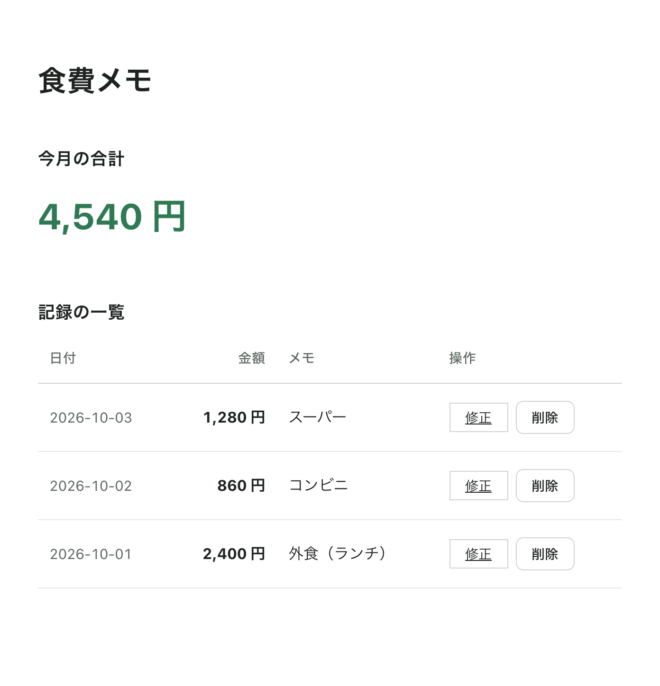
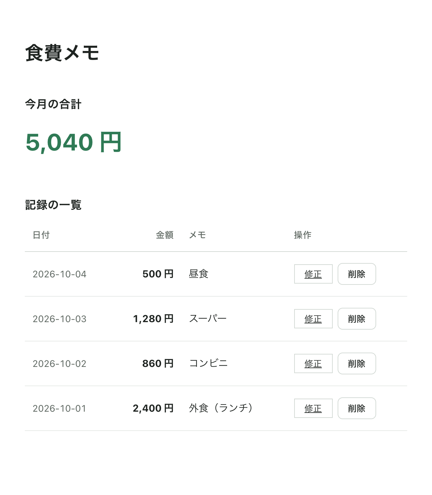
確かめた結果を一覧に残す
試したら、結果を Claude Code に伝えて docs/actions.md に書かせます。
うまく動かなかったときは、「1行目：NG（保存を押しても一覧が増えない）」のように、何をしたら、何が起きたかを書きます。次の節の型で直させます。
なぜ自分の手で確かめるのか：Claude Code は「作りました」と答えますが、実際の画面で押して確かめたわけではありません。確かめ方を自分の手で通して初めて、その動きができたと言えます。何を確かめるべきかを自分が持っていないと、あとで AI に確かめさせたときに、その報告が正しいかどうかを判断できません。
なぜ結果をファイルに書かせるのか：どこまで確かめたかを、覚えておかなくて済みます。あとで別の動きを足して前の動きが壊れたとき、「前は OK だった」と分かれば、壊したのは最後に足した動きだと絞り込めます。
06
動かないとき：コンソールの赤い文字を渡す
ボタンを押しても何も起きないときは、JavaScript がどこかで止まっていることが多いです。止まった理由は、ブラウザのコンソールに赤い文字で出ます。
 用語
用語
- 開発者ツール
- ブラウザに最初から付いている、画面の中身やエラーを調べる機能。
- コンソール
- 開発者ツールの中の、JavaScript のエラーや記録が文字で出る欄。止まった理由が赤い文字で出ます。
- エラー
- プログラムが途中で止まった理由を知らせる文。英語で出ることが多いですが、読めなくて構いません。そのまま Claude Code に渡します。
コンソールの開き方
2026年10月4日時点の開き方です。メニューの名前は、更新で変わることがあります。
| ブラウザ | 開き方 |
|---|---|
| Chrome | Mac は ⌥⌘J（option＋command＋J）、Windows は Ctrl+Shift+J。開いた欄の上の「Console」を押す |
| Edge | Mac は ⌥⌘J、Windows は Ctrl+Shift+J |
| Safari | 先に「Safari」→「設定」→「詳細」→「Web デベロッパ用の機能を表示」をオンにする（1回だけ）。そのあと ⌥⌘C |
表は横にスクロールできます
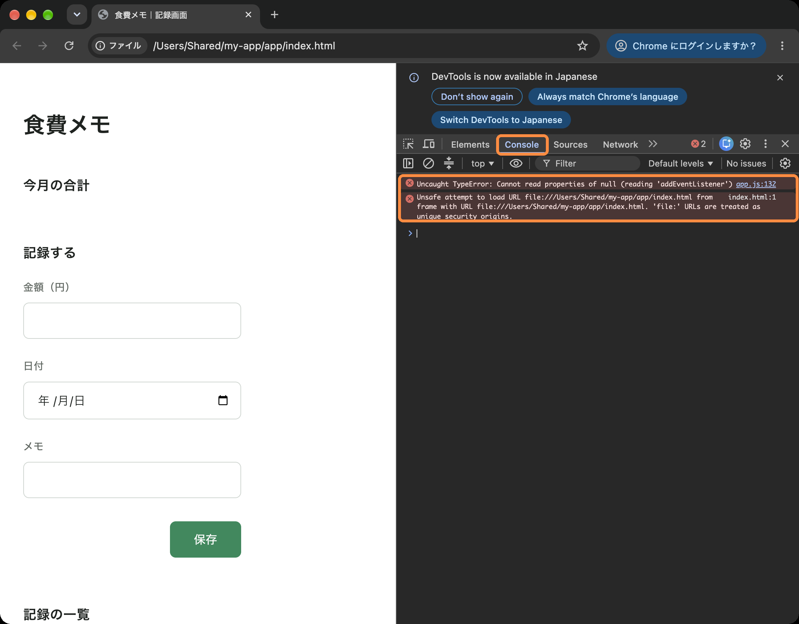
渡し方
先に、下の型の「コピー」を押して入力欄に貼り、（ ）の中を書き換えます。次に、コンソールを開いたまま再読み込み（⌘R／F5）して同じ操作をもう一度し、赤い文字が出たところをスクリーンショットで撮ります（Mac は ⌃⇧⌘4、Windows は Windows＋Shift＋S を押して範囲を選ぶと、画像がクリップボードに入ります）。入力欄で ⌘V（Windows は Ctrl+V）を押すと画像が貼れるので、そのまま送ります。
なぜこの順番なのか：クリップボードに入るのは1つだけです。先にスクリーンショットを撮ってから型の「コピー」を押すと、画像は型の文字に置き換わって消えます。再読み込みしてから操作するのは、開いた直後に止まる不具合の赤い文字も出し直すためです。
原因の説明を読んだら、「直してください。変えるのは、いま説明してくれた原因の箇所だけにしてください。HTML の要素の並び・文言と style.css は変えないでください」と送ります。なぜ：読み込みの1行が無い・ファイル名が違う・id の付け忘れのように、HTML を直さないと直らない原因もあります。
直ったら、再読み込みして、もう一度「確かめ方」を通します。
なぜ「したこと・起きたこと・コンソール」の3つを渡すのか：「動きません」だけでは、AI はどの操作のことか分からず、推測で別の場所を直します。何を押して、何が見えたかと、止まった理由の文があれば、原因を1つに絞れます。
なぜ先に原因を説明させるのか：すぐに直させると、AI は原因が分からないまま、それらしい場所をまとめて書き換えることがあります。直ったように見えても、何が悪かったのかが分からず、同じことが起きたときにまた一からになります。説明を読んで、自分のした操作の話になっているかを確かめてから直させます。
赤い文字が出ていないとき
JavaScript が止まったのではなく、別の理由で動いていないことが多いです。
- HTML に読み込みの1行（
<script src="app.js"></script>）が無い、またはファイル名が違う - 再読み込みをしていない（前の画面のまま）
- 別のフォルダの HTML を開いている（
app-mockの中のindex.htmlを開いていないか、アドレス欄で見ます）
このときも、「したこと・起きたこと・赤い文字は出ていない」の3つを渡して、まず原因を聞きます。
07
指示③：残りの動きを1行ずつ足す
1行目が動いたら、残りの「まだ」の行を、上から1行ずつ足していきます。毎回、次の型をそのまま貼って送ります。書き換える箇所はありません（次にどの行を作るかは、一覧の「状態」から読み取らせます）。
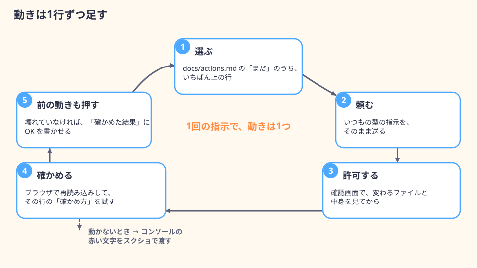
1行足すたびにすること
- 1
確認画面で、変わるファイルと中身を見てから許可する
HTML に要素を足すときは、どの画面のどこに足すかが返答に書かれているので、それと確認画面の中身が合っているかを見ます。
- 2
ブラウザで再読み込みして、その行の「確かめ方」を試す
- 3
前に作った動きも、もう一度押してみる
なぜ：AI は新しい動きを足すときに、前の動きと共通の部分を書き換えることがあります。入力のチェックを足したら、正しい入力でも保存できなくなった、ということが起きます。すぐに気づけば、原因は最後に足した1行に絞れます。
- 4
結果を
docs/actions.mdの「確かめた結果」に書かせる「自分の手で確かめる」の節の型を使います。OK の行は、1回でまとめて伝えて構いません。
なぜ1回の指示で1行なのか：まとめて頼むと、確認画面の中身が長くなって読み切れず、動かないときに、どの行の作業が原因か分かりません。1行ずつなら、うまくいかなかったときに「さっきの1行を作る前に戻して」と頼むだけで済みます。
なぜ毎回同じ型を貼るのか：型の中に、変えてよい範囲と、この回で作らないものが全部入っています。2回目以降に条件を省くと、AI はその回の指示だけを見て、データを残す処理や見た目の変更を始めることがあります。
行の種類ごとの決まりの理由
- 入力のチェック：だめなときは保存しない・欄の近くに理由・入力は消さない
- なぜ空の金額で保存されると、一覧に金額の無い行ができ、合計が計算できなくなります。理由が欄から離れた場所に出ると、どこを直せばよいか分かりません。入力を消すと、長いメモを最初から打ち直すことになります
- 入力のチェック：仕様書の「扱うデータ」の必須・種類・範囲だけ
- なぜ仕様書に無いチェック（メモの文字数の上限など）を AI が足すと、自分が決めていない理由で保存できなくなります。たとえば食費メモの金額は「0以上の整数」なので、空・マイナス・小数・数字でないものを止めます。メモは「任意」なので、空でも止めません
- 1件も無いとき：次に何をすればよいかが分かる案内
- なぜ一覧が空白のままだと、壊れたのか、まだ何も無いのかが区別できません。使い始めの最初の画面は、この「1件も無い」状態になります
- 処理中：ボタンを押せなくし、処理中だと分かる文
- なぜAI の返事は数秒かかります。何も変わらないと、動いていないと思って何度も押します。本物の AI につないだあとは、押した回数だけ料金がかかります
- 失敗したとき：決まった文を出し、入力は消さない
- なぜ本物の AI は、通信や混み具合で失敗することがあります。何も出ないと、待ち続けることになります。入力が残っていれば、もう一度押すだけでやり直せます
- ai.js は「失敗テスト」の文字のときだけ失敗する
- なぜ失敗したときの表示は、本物の AI がたまたま失敗するまで確かめられません。わざと失敗させる決まりがあれば、自分の手で何度でも確かめられます。本物の AI につなぐときに ai.js ごと差し替わるので、この決まりは残りません
自分のアプリの型での見え方
記録型：入力のチェックでは、理由が金額欄の下に赤い文字で出て、一覧は増えません。全部削除すると、一覧の場所に「まだ記録がありません」の案内が出ます。
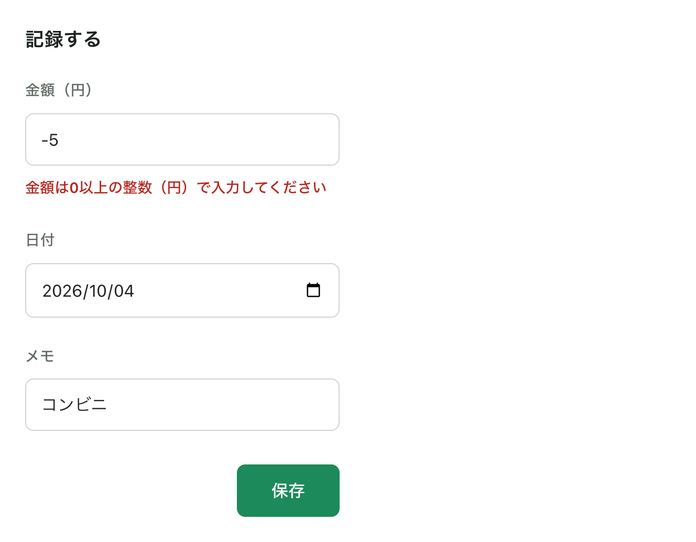
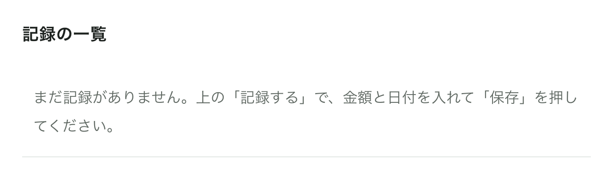
変換型・相談型：「変換」「送信」を押すと、ボタンが押せなくなって処理中の文（「考え中…」「まとめています…」など）が出て、1秒後に仮の文章が出ます。入力に「失敗テスト」を入れて押すと、失敗の文が出て、入力は残ります。
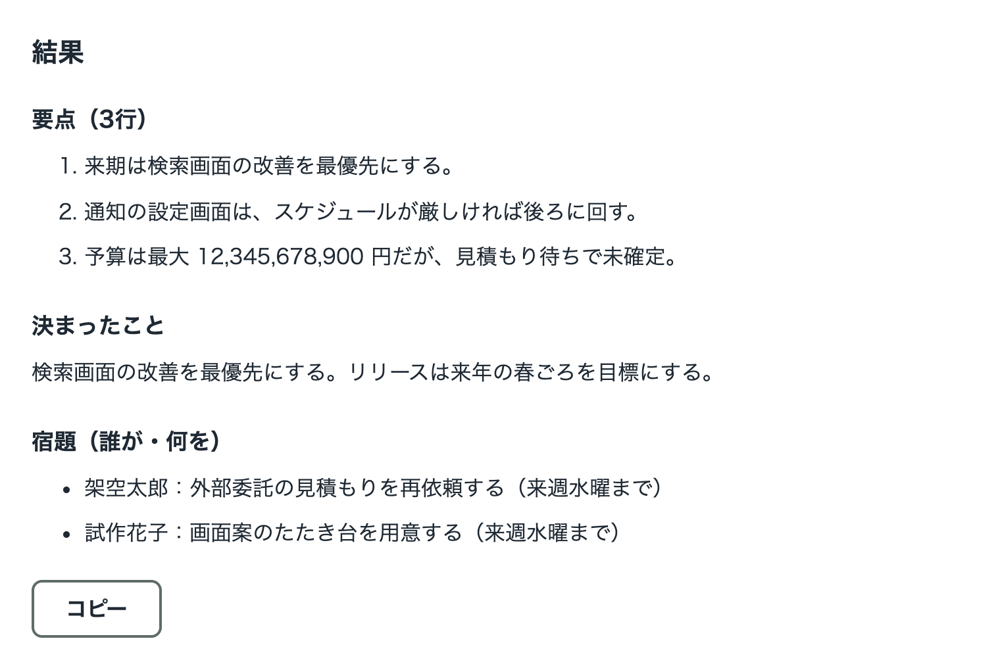
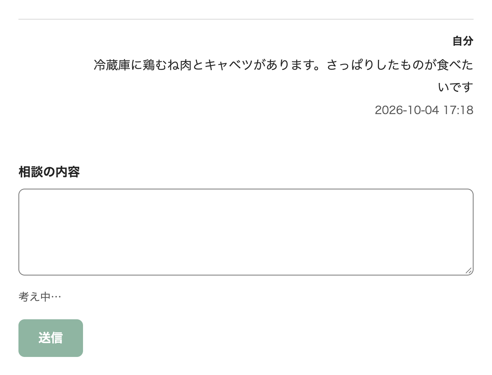
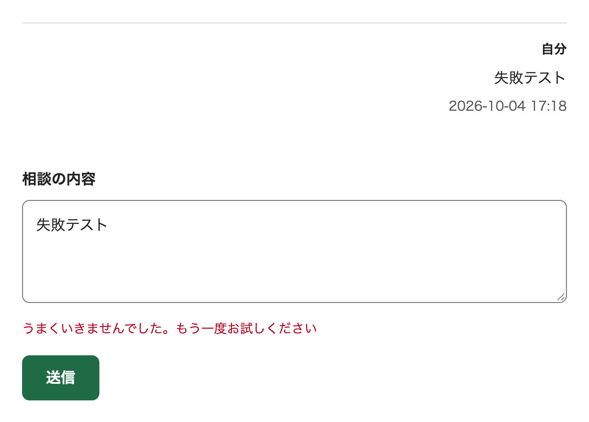
 「あとで」の行は、この回では作りません。「まだ」の行が無くなったら、この回の指示③は終わりです。「あとで」の行（修正画面に選んだ記録を出す・閉じても残る・本物の AI など）は、データの置き場とサーバーを決めてから作ります。「あとで」の行を作らせようとして、データを残す処理を頼まないでください。
「あとで」の行は、この回では作りません。「まだ」の行が無くなったら、この回の指示③は終わりです。「あとで」の行（修正画面に選んだ記録を出す・閉じても残る・本物の AI など）は、データの置き場とサーバーを決めてから作ります。「あとで」の行を作らせようとして、データを残す処理を頼まないでください。
08
見直す：全部押す・見た目を見比べる・仕様書と揃える
「まだ」の行が無くなったら、次の4つを見ます。
- 1
一覧の「作った」の行を、上から全部もう一度押す
最後に足した動きのせいで、最初のほうの動きが壊れていないかを見ます。結果を「確かめた結果」に書かせます。
- 2
app-mockの画面と見比べるapp-mockの中のindex.htmlを別の窓で開き、appの画面と並べて、見出し・ボタンの文字・色・余白が変わっていないかを見ます。足した表示（エラーの文・案内の文・処理中）以外が変わっていたら、「app/index.htmlの（ ）が、app-mock/index.htmlと変わっています。元に戻してください。動きは変えないでください」と頼みます。なぜ：動きを足す指示の途中で、見た目が少しずつ変わることがあります。毎回の確認画面では気づきにくいので、最後に控えと並べて見ます。 - 3
仕様書と揃える
Claude Code に「
docs/spec.mdと、docs/actions.md・いまのapp/の画面で、違うところを一覧にしてください。まだ何も変えないでください」と頼みます。出てきた違い（足したエラーの文・案内の文、入力のチェックの決まりなど）を1つずつ、仕様書に書き足すか、画面を仕様書に戻すかを決めます。書き足すものだけ「docs/spec.mdの（ ）に、（ ）を足してください。ほかの項目は変えないでください」と頼みます。なぜ：仕様書と画面が食い違ったままだと、データを残す処理やテストを足すとき、AI がどちらを正としてよいか分かりません。 - 4
docs/tasks.mdに終わった印を付ける作る順番
docs/tasks.mdのうち、画面の中だけでできたタスクを- [x]にしてもらいます。データを残す・画面をまたぐタスクは、まだ終わっていません。次の型をそのまま貼って送ります。なぜ：印が実物とずれていると、次に作り始めるときに、できているものをもう一度作らせることになります。
 ここで作った画面側の流れ（押す → 待つ → 出る／失敗）は、裏側をつないだあともそのまま使います。裏側をつなぐときに変えるのは、「データをどこから持ってきて、どこに残すか」と「仮の文章を返す1か所を、本物の AI を呼ぶ形に変える」ことだけになります。画面側で受け渡すデータの項目と、差し替える場所が、すでに決まっているためです。
ここで作った画面側の流れ（押す → 待つ → 出る／失敗）は、裏側をつないだあともそのまま使います。裏側をつなぐときに変えるのは、「データをどこから持ってきて、どこに残すか」と「仮の文章を返す1か所を、本物の AI を呼ぶ形に変える」ことだけになります。画面側で受け渡すデータの項目と、差し替える場所が、すでに決まっているためです。
Deliverables
この回で作るもの
終わったとき、手元に次の4つ（AI を使うアプリは5つ）がある状態にします。この回の課題の内容は commmune のゼミスレッドでご案内し、提出は「ゼミ参加者向け 事前課題提出受付フォーム」から開催3日前までにお願いします（Home の「ゼミのルール・修了要件」）。演習サイト Boarding Pass の理解度チェックもあります。
 用語
用語
- commmune
- DMM 生成AI CAMP の受講生向けコミュニティサイト。ゼミごとのスレッドで課題や連絡を案内します。
変えたファイルの一覧
Claude Code に「app-mock と見比べて、この回で作った・変えたファイルの一覧（app/ と docs/ の中）を出してください。ファイルは変えないでください」と頼んだ返答。スクリーンショットか、文字をそのまま貼ります。なぜ：会話が LIVE講義と課題で分かれても、一覧から漏れません。
docs/actions.md（動きの一覧）
「状態」と「確かめた結果」（OK／NG／まだ確かめていない）が入ったもの。NG が残っていても構いません。そのときは、何が起きたかを書いておきます。
いちばんよく使う動きの、前と後のスクリーンショット
押す前の画面と、押したあとの画面を各1枚。名前やメールアドレス、業務の実データが写っていないものにします。
つまずきの記録
動かなかったときに、何をして、何を渡して、どう直ったか（または、まだ直っていないか）を1件以上。無ければ「なし」と書きます。
なぜこの4つなのか：動いている様子は、スクリーンショット1枚だけでは伝わりません。一覧と確かめた結果があれば、どこまで作って、どこまで自分の手で確かめたかが分かります。つまずきの記録は、動かなかったときの渡し方を自分で回せたかを見るためのものです。
Pitfalls
よくあるつまずきと対処
詰まったら、Home の「分からないことが出てきたらこの順番で」の順（スクショを撮って AI に聞く → ゼミ掲示板）で進めてください。
ボタンを押しても何も起きない（赤い文字が出る）
JavaScript が途中で止まっています。
対処：「動かないとき」の節の型で、したこと・起きたこと・コンソールのスクショを渡し、原因を先に説明させます。
コンソールに、自分のファイルと関係が薄そうな赤い文字も出る
例：Unsafe attempt to load URL file:///… 'file:' URLs are treated as unique security origins. ダブルクリックで開いた画面（file://）で、Chrome が出すことがある知らせです。アプリの動きとは関係しないことが多いです。
対処：見分けようとしなくて構いません。赤い文字はまとめてスクショに入れて渡せば、Claude Code が関係のあるものを見分けます。
ボタンを押しても何も起きない（赤い文字も出ない）
読み込みの1行が無い・再読み込みしていない・別のフォルダの HTML を開いている、のどれかです。
対処：HTML の最後に <script src="app.js"></script> があるかを Claude Code に聞きます。再読み込み（⌘R／F5）します。アドレス欄が app-mock になっていないかを見ます。
押すと画面が一瞬白くなって、最初の状態に戻る
フォームの送信で、画面が読み込み直されています。
対処：「『保存』を押すと画面が読み込み直されます。読み込み直さないようにしてください。ほかは変えないでください」と頼みます。
一覧に同じ行が2回ずつ出る
HTML の仮のデータと、app.js の見本のデータの両方が描かれています。
対処：「一覧に同じ行が二重に出ています。HTML に直接書いてある仮のデータを消して、app.js の見本のデータだけから描くようにしてください」と頼みます。
動きを足したら、色や余白が変わった
HTML の構造や style.css を書き換えられています。
対処：app-mock と並べて違いを見つけ、元に戻させます（「見直す」の節）。次からは、型の「変えてよい範囲」を省かずに貼ります。
type="module" や import が使われて、何も動かない
ダブルクリックで開いた画面では、ブラウザがこれを止めます。
対処：「type="module" と import を使わずに、普通の <script src> で読み込む形にしてください」と頼みます。
Claude Code がサーバーを作ろうとする・npm のコマンドを出してくる
この回では使わない道具が増えます。
対処：確認画面で「拒否」。「この回はサーバーを使いません。ダブルクリックで開いて動く形にしてください」と送り直します。
Claude Code がブラウザを起動して確かめようとする
頼んでいないコマンドの確認が出ます。
対処：「拒否」で構いません。確かめるのは、ご自身のブラウザで行います。拒否しても、頼んだ変更は残っています。
再読み込みすると、足したデータが消える
正しい動きです。この回はデータを残しません。
対処：不具合ではありません。「残す」は一覧の「あとで」の行で、データの置き場を決めてから作ります。
「修正」を押すと、修正画面に選んだ記録が出ない
画面をまたぐ受け渡しは、この回では作りません。
対処：一覧の「あとで」の行です。この回では、修正画面はモックのまま（決まった仮の値が出る）で正しい状態です。
Claude Code がデータを残す処理（localStorage など）まで作った
指示の「データは画面の中に持つだけ」が抜けた、または AI が先回りしました。
対処：「データを残す処理は外してください。画面の中に持つだけにしてください」と頼みます。型は省かずに貼ります。
入力のチェックで、正しい入力まで止められる
仕様書に無いチェックが足されたか、範囲を読み違えています。
対処：理由の文を読んで、どのチェックかを確かめます。「メモは任意なので、空でも保存できるようにしてください」のように、仕様書の決まりを示して直させます。
処理中の表示が一瞬で消えて見えない
仮の文章が、待たずに返っています。
対処：「ai.js は1秒待ってから返すようにしてください」と頼みます。待つ時間があると、処理中の表示を目で確かめられます。
Safari でコンソールが開けない
開発用のメニューが出ていません。
対処：「Safari」→「設定」→「詳細」→「Web デベロッパ用の機能を表示」をオンにします。
ダブルクリックで、ブラウザ以外のソフトが開く
HTML ファイルに、エディタが割り当てられています。
対処：右クリック →「このアプリケーションで開く」（Windows は「プログラムから開く」）→ ブラウザ。ブラウザの窓にファイルをドラッグしても開けます。
一覧（docs/actions.md）の行が多すぎる・仕様書に無い動きが混じった
仕様書の「やること」が多すぎるか、指示①の条件が守られていないか、仕様書の「やらないこと」があいまいです。
対処：行が多すぎるとき（12行に収まらずに止まったときも）は、作らないものを選んで「docs/spec.md の『やること』の（ ）を『やらないこと』に移してください。ほかの項目は変えないでください」と頼み、許可したら指示①をもう一度そのまま送ります。仕様書に無い動きが混じったときは、1行ずつ消させます。「やらないこと」に書き足すべきものなら、仕様書も直します。
app-mock のほうを書き換えられた
控えのフォルダも、作業の対象として読まれました。
対処：「app-mock は控えです。元に戻して、以後は読まないでください」と頼みます。指示①の型には「app-mock フォルダは読まないでください」を入れてあります。
途中で利用の上限に達した
指示が通らなくなります。
対処：ここまでに作ったファイルは残っています。使える量が戻ったら、同じフォルダを開き直し、指示③の型を貼れば、一覧の「まだ」から続きを作れます。上限の量と戻る周期は契約で違い、変わることがあるので、最新は Claude の公式ページでご確認ください。
 用語
用語
- localStorage
- ブラウザがサイトごとに持っている保存場所。名前と文字列の組を残します。
Glossary
この回で出てきた用語
| 用語 | 意味 |
|---|---|
| 動き | 操作（押す・入れる）を受け取って、画面の中身を書き換える仕組み |
| JavaScript | ブラウザの中で動くプログラム。「押されたら何をするか」を書く。ファイル名の最後が .js |
| 画面側（フロントエンド） | ブラウザの中で動く部分。HTML・CSS・JavaScript でできている |
| 裏側 | 利用者から見えない場所で動く部分。データを残す処理や、AI のサービスを呼ぶ処理など |
| サーバー | 利用者から見えない場所で動き、画面からの求めに応じてデータを返したり残したりするプログラム。この回では作らない |
| API キー | AI のサービスを呼び出すときに、誰が使っているかを示す秘密の文字列。使った分の料金は、このキーを発行した人に請求される |
| 権限モード | ファイルの書き換えやコマンドの実行の前に、確認を求めるかどうかの設定 |
| コマンド | PC に文字で出す命令 |
| セッション | Claude Code との1つの会話のまとまり。「＋ 新規」で新しく始める |
| docs/actions.md | この回で作る動きの一覧。1行が1回分の指示になる |
| app.js | 画面の動きを書く JavaScript のファイル |
| ai.js | AI に考えてもらう部分だけをまとめるファイル。この回は仮の文章を返すだけ |
| 関数 | プログラムの中で、ひとまとまりの処理に名前を付けたもの。名前で呼ぶと、その処理が動く |
読み込み（<script src>） | HTML に「この JavaScript のファイルを使う」と書く1行 |
| id | HTML の要素に付ける名前。JavaScript が要素を見分けるのに使う |
| タグ・class | タグは HTML で要素の種類を表す印、class は要素に付ける分類の名前。style.css はこの2つを目印に見た目を当てる |
| 見本のデータ | モックの仮のデータを、app.js の中にまとめ直したもの |
| 仮の文章 | 本物の AI の代わりに返す、決まった文章 |
| パッケージ | ほかの人が作ったプログラムの部品。入れると package.json などのファイルが増える |
| ターミナル | 文字で命令を打ち込む画面。この回では使わない |
| 再読み込み | ブラウザに画面のファイルを読み直させること。⌘R／F5 |
| file:// | 自分の PC の中のファイルを直接開いている状態を表す、アドレスの始まり |
| フォーム | HTML の入力欄のまとまり。ボタンを押すと内容を送って画面を読み込み直す動きが、最初から付いている |
| localStorage | ブラウザがサイトごとに持っている保存場所。名前と文字列の組を残す |
| 開発者ツール | ブラウザに最初から付いている、画面の中身やエラーを調べる機能 |
| コンソール | 開発者ツールの中の、JavaScript のエラーや記録が文字で出る欄 |
| エラー | プログラムが途中で止まった理由を知らせる文 |
| 入力のチェック | 入力が仕様書の決まり（必須・種類・範囲）に合っているかを確かめ、合わないときは保存せず理由を出すこと |
| 処理中の表示 | 時間のかかる処理（AI の返事を待つ間など）に、ボタンを押せなくして「考え中…」のように出す表示 |
| 失敗したときの表示 | 処理がうまくいかなかったときに、決まった文を出し、入力を残しておく表示 |
| 控え（app-mock） | 動きを足す前の app を複製して残したフォルダ。見比べたり、戻したりするのに使う |
表は横にスクロールできます